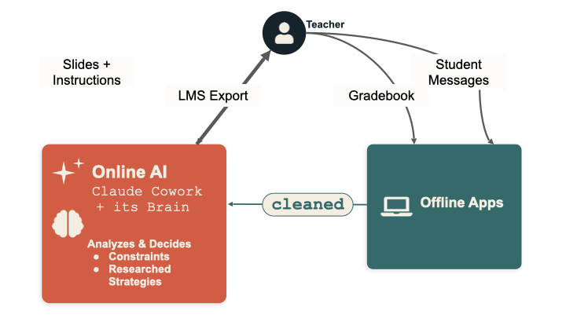

It drafts your slides, your parent messages, and your encouragement cards, and adjusts what it makes as the class changes. Your gradebook never leaves your laptop — the AI works for your class without ever seeing your students' data.
What it is
My Classroom Assistant is a free, open-source project that runs inside Claude Cowork. It gives your class one AI that works toward a single goal you set — fewer missing assignments, better attendance, more participation — and makes the everyday materials that get you there.
Out of the box, it includes:
- A set of offline apps that handle everything touching student data — gradebook analysis, printable progress cards, parent messages — entirely on your laptop, with no internet connection.
- A skill that builds more apps. When you need a tool that doesn't exist yet, the AI writes it for you as a single offline file.
- A research library of evidence-based teaching practices the AI draws on, so its choices come from research, not vibes.
- Ready-made AI personalities your class can adopt or remix, so no one starts from a blank page.
- A slide-design library for the classroom projector — accessible, high-contrast openers the AI fills in.
You set it up through a short onboarding chat: the AI interviews you, and together you draft your assistant's name, personality, and mission.

How it works
The whole design rests on one rule: the AI never sees student-identifying data. Here's the loop.

- You stay in the middle. Nothing passes between your students and the AI directly — you're always in between. The AI proposes; you decide; you're the one who acts in the room.
- Student data stays on your laptop. Your gradebook and LMS exports go into the offline apps, which run entirely in your browser. They turn raw data into name-free, aggregate summaries — “8 students behind on Unit 3,” never a list of names.
- Only the cleaned summary crosses the line. You paste that aggregate into the AI, along with anonymous student messages you've already stripped of names. The AI reads the state of the class without ever seeing a student record.
- The AI analyzes and makes things. Grounded in its mission, the research library, and the boundaries you've set, it drafts your slides, parent-message templates, encouragement notes, and instructions — and hands them back to you.
- You run it, the class moves, the aggregates come back, the AI adjusts. That's the loop, repeating across the semester.
It works in the real world — through you
You tell the AI what it actually has to work with: what you can hand out, what rewards you can run, how you want it to talk to the class. In the classroom pilot, the AI organized a tea party for a class that hit its goal, ran raffles, and managed a prize box. It can't do any of that itself — it proposes, and you make it happen. That teacher-in-the-middle design is exactly what makes the real-world rewards both safe and real.
When it needs a tool it doesn't have, it builds one
A single offline HTML file you double-click to open. None of these tools call the internet or store student data; the AI writes the code, your browser does the data work.
See it in 90 seconds
No setup, no real data, no account:
- Double-click
local-tools/ClassAI-dashboard.html. - Click Progress Cards in the sidebar, then “Load the fictional demo class.” Print a card.
- Click AI Export, load the demo class again, and generate a summary — that's the name-free aggregate the AI runs on.
That's the whole privacy architecture in your hands: real-feeling tools on your side of the line, an aggregate-only summary crossing it.
Want the long view? Demo Semester (in the same sidebar) shows a fictional class running this project for 16 weeks — the Cowork chats, the slump, the turnaround, and the final report.

What your students decide
This isn't your AI — it's the class's. During setup, the students vote on:
- The mission — what the class works toward: missing assignments, attendance, smoother transitions, participation.
- The name and personality — they name it and shape how it talks. (My class named theirs Nolan.AI.)
From there it adapts to what the class wants — an ASL sign of the week, an Ojibwe word of the week, whatever adds a little variety. Students send anonymous messages through a Google Form; you strip any identifying info and paste the aggregate back, and the AI uses it to adjust what it proposes next.
Where it came from
This started as an experiment in my own classroom. I gave one class's AI a single mission — reduce missing work — let the students name it (they chose Nolan.AI), and ran it for a semester.
One class · self-reported · directional, not proof.
It was enough to convince me the idea was worth building into something other teachers could use for free.
The shape of the project is borrowed from Anthropic's Project Vend — the experiment where Claude was given a small business to run, with real goals, real constraints, and real autonomy. My Classroom Assistant is the classroom version of that question: can a semi-autonomous AI, kept safely behind the teacher, help a class reach a goal it set for itself?
To make that question answerable, the AI runs under four constraints:
- A personality. Your students help name and shape the AI's voice. It's your class's AI, with a stake in your class's success.
- A clear goal. One mission for the unit, quarter, or semester. Everything it does ladders up to that goal.
- Evidence-based practices. Its defaults come from research, not vibes — and it can tell you which practice a given choice draws on.
- Aggregated data only. It never sees individual student records — only summaries, tier counts, and aggregate movement. PII stays in the offline tools on your laptop.
The offline apps
The project includes a set of small browser-based apps the teacher uses to do anything that touches student data. They run entirely offline — no network calls, no cloud, no AI in the loop. Your roster and gradebook never leave your laptop. They're safe to use with real student data.
You open them through Class Tools (local-tools/ClassAI-dashboard.html) — double-click it once, and a sidebar lets you jump between apps.


Included today:
- Dashboard. Your home base. Shows your class goals, where the class is right now, and what your AI is focused on. Every other app is one click from here.
- Progress Cards. Print one card per student — either what they owe right now (missing work, with checkboxes) or how they're doing overall (every assignment, color-coded). Two-per-page; cut them and hand them out at the door.
- Parent Messages. Write one short template per tier (struggling / steady / strong) and the app mail-merges it into per-student messages with each kid's name, period, grade, and missing assignments. You paste each one into ParentSquare, email, or whatever you use to reach families.
- Gradebook Analytics. Drop in your gradebook and get a sortable per-student view — tiers, missing assignments, and patterns you wouldn't spot scrolling rows in PowerSchool.
- AI Export. A name-free summary of how the whole class is doing — counts by tier, most-missed assignments, week-over-week movement. This is what you paste to your AI so it knows the state of the class without ever seeing student records.
- Feedback Cleaner. Paste anonymous student feedback; it strips names and emails on your laptop and hands you a name-free digest to paste into your AI. Comes with a ready-to-use Google Form. Safe to use with real responses.
- Badges. Make up your own badges (Most Improved, Best Question of the Week, whatever fits your class), pick students from the roster, and print bordered certificates two-per-page.
- Random Groups. Generate balanced groups of any size, with a do-not-pair list and pair history so the same combinations don't keep coming up.
- App Studio. A gallery of tools your AI can build for you — each with a ready-to-paste prompt. The starting set is just the start.
- Demo Semester. A fictional class running everything above for 16 weeks — Cowork chats included. Start here to see the destination.
These tools are a starting set — your AI builds the next one. When you need something the included apps don't cover, the teacher-app-builder skill (installable in Claude Cowork) lets the AI generate a new offline app for you. It asks a few questions, builds the HTML, runs a privacy check, and registers the new app with the Dashboard sidebar automatically.
Get started
The fastest taste is the 90-second tour above — no setup, no account, no real data.
When you're ready to go further, two more on-ramps before real students are involved:
A full dry run of the apps (~15 minutes)
From the Dashboard, walk through Progress Cards → AI Export → Parent Messages → Badges with the demo class. See what each one produces side by side.
The full experiment, end to end (~30 minutes)
Open this folder in Claude Cowork and say hi. Run AI Export on the demo class, paste the aggregate into Cowork, and ask the AI for “Monday's opening slide.” That's the loop running on a fictional class.